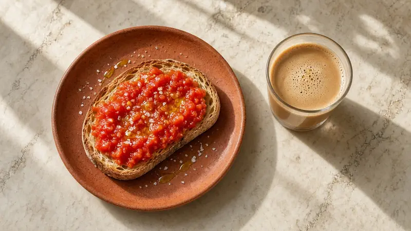

South Congress · Austin, TX
Order from your table or for pickup, no line.
Breakfast on sourdough from a neighborhood bakery, with coffee roasted here in Austin. We’re two blocks off South Congress and open every day.
Mon–Fri 8 AM–4 PMSat–Sun 9 AM–3 PM
See the menu and order

A QR code on every table
Guests scan, browse the menu on their own phone and order without waiting. Each order comes in with its table number.